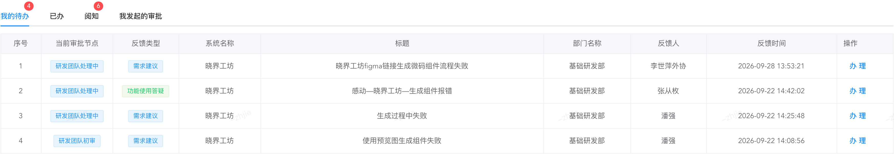
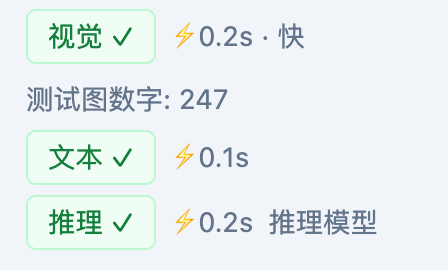
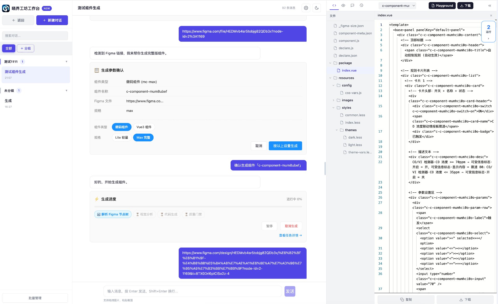
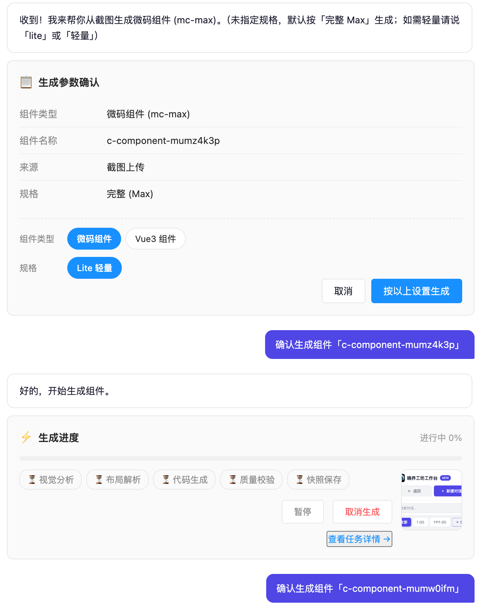
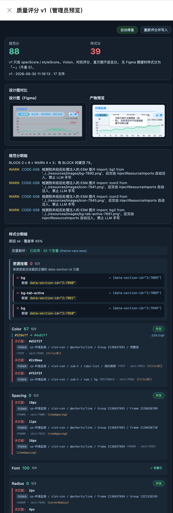
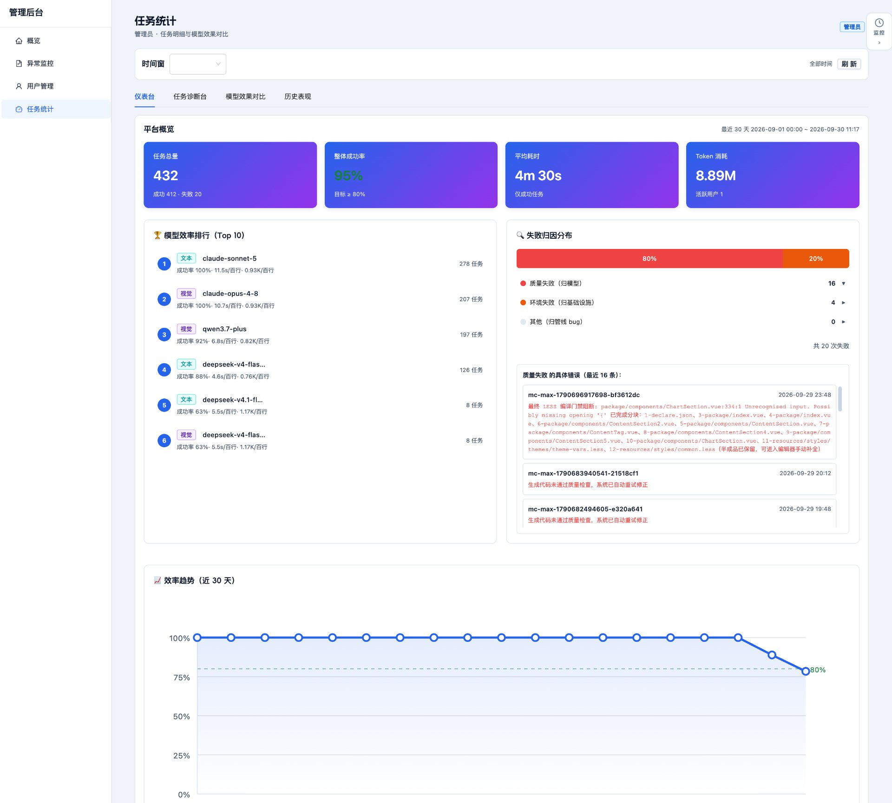
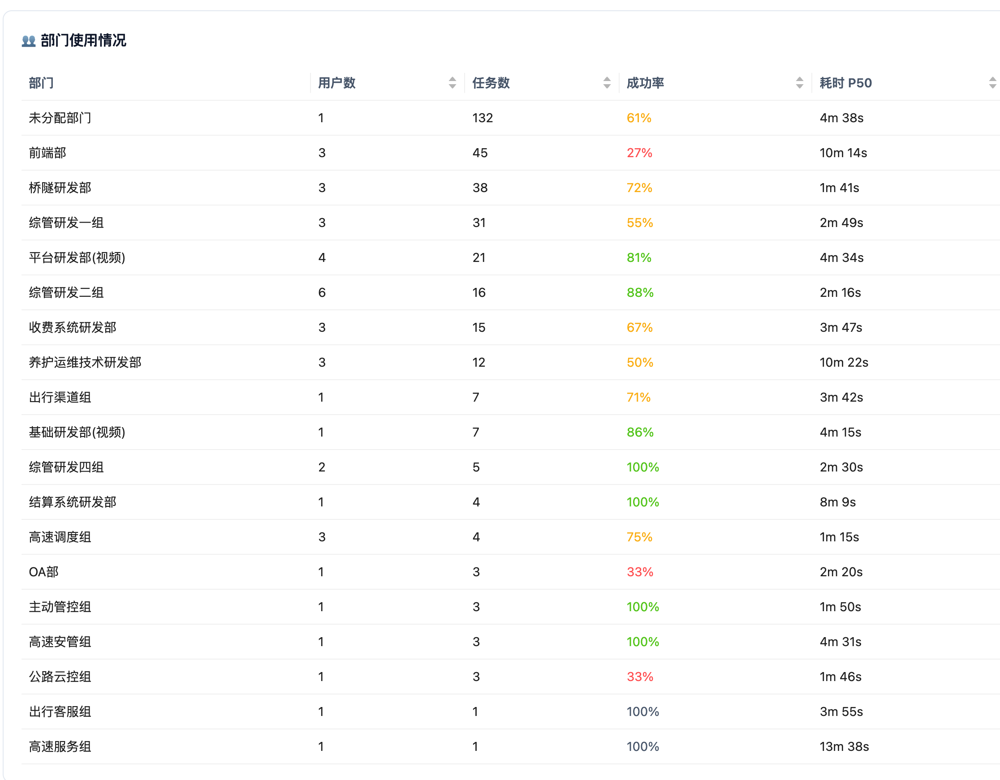

月 度 汇 报
统计区间：2026-08-27 ~ 2026-09-30
| 本月概览 |
|---|
|
本月修复疑难问题 8 类，上线功能 12 项，工作重心是生成质量、运行稳定性、使用体验与数据安全。 影响最大的一项改动是关掉模型的思考模式：代码生成单块耗时从 40 ~ 190 秒降下来，空结果重试基本消失。 正文按「解决的问题」「迭代的新功能」两部分展开，另有一节单独说明关闭思考模式的原因与取舍。 |
| Git Commit | 发布部署 | 修复疑难问题 | 新增功能能力 |
|---|---|---|---|
| 793 次 | 5 次 | 8 类 | 12 项 |
| Commit 拆分：backend-node 450 / frontend 110 / docs 107 / 主仓 126（2026-08-27 ~ 2026-09-30，非 merge 提交）；发布部署次数为主仓上线记录 | |||
本月修复 8 类问题，分布在用户反馈、视觉与布局、生成性能、安全鉴权、质量门禁五处。
问题：快搭平台本月 4 条审批反馈全部指向生成失败，均来自基础研发部：figma 生成微码组件流程失败、生成组件报错、生成过程中失败、用预览图生成组件失败（见图 1）。
核查：逐条归因，4 条落在两处——figma 精修生成失败和生成过程失败是生成稳定性问题，生成组件报错和用预览图生成失败出在生成链路与管线质量。

图 1 快搭平台用户反馈：4 条生成失败类审批
解决：生成稳定性是同一个根因——推理模式没真正关闭，思考把输出预算烧光后返回空结果、超时。已在 1.3 根治，并加了截断自愈，重试时自动关思考。
另外两条出在不同地方：生成组件报错是产物写盘校验被跳过、资源挂载与命名有偏差；用预览图生成组件失败是截图到生成管线的通道没打通，工作台的截图真值没传给生成链路。两处都已修掉，剩下的误拒靠失败归因看板（见图 7）逐条定位。
治理后待继续观察。
问题：70% 的组件主题切换失效。用户切到深色或浅色后，画面没有任何变化。
解决：原因是 LESS mixin 变量覆盖不到同名变量，运行期样式注入链也不可靠。两处都改掉后，主题切换恢复。
问题：五类布局塌陷肉眼可见，质量门禁却全部放行。比例失调、内容被截断、网格塌成一列都在其中，问题直接交到用户手里。
解决：逐类补判据，改成生成时就拦下，不再等人工事后发现。
问题：视觉分析太慢。主力模型单次调用 218 秒，逼近超时线，多次降级。
解决：调好推理模式和参数形态后降到 104 秒，少了 52%。识别改成视觉 / 文本 / 推理三路并行（见图 2），单路亚秒级，用 247 张测试图跑过回归。
增加模型速度检测。

图 2 识别能力增强：视觉 / 文本 / 推理三路并行，单路耗时亚秒级（测试图数字 247）
问题：推理模式名义上关了，实际没关。配置里写了关闭，运行时的透传断点把参数弄丢了，模型根本没收到。代码生成每块耗时 40 ~ 190 秒；思考内容吃掉输出预算，返回空结果，一次失败白等 3 ~ 7 分钟再重试。
解决：补上透传断点，推理真正关闭。分块耗时降下来，空结果重试基本没有了。
关键指标实测数据：
| 关键指标 | 优化前 | 优化后 |
|---|---|---|
| 视觉模型单次分析耗时 | 218 秒（接近超时上限，多次降级） | 104 秒（降幅约 52%） |
| 代码生成单块耗时 | 40 ~ 190 秒 | 已脱离该区间，不再出现分钟级分块 |
| 推理导致的空内容重试 | 单次白等 3 ~ 7 分钟 | 基本消失 |
| 识别链路 | — | 视觉 / 文本 / 推理三路并行，单路 0.1 ~ 0.2 秒 |
问题：部分控制器一直没有鉴权。未登录也能直接调到业务逻辑，存在越权风险。
解决：Node 与 Java 两侧接口统一挂上会话鉴权，未登录一律 401。门户校验加了 5 分钟短缓存（SHA-256 摘要），安全性不变，重复校验的开销省掉了。
优化：加一条文本覆盖率门禁，按设计稿中文串的覆盖比例分档处理。
问题：微码规范升级后，存量产物和新规范对不上。人工逐条比对慢，而且容易漏。
解决：管线对齐最新规范：生成时按新规范产出，生成后自动检查，查出的问题由 AI 自动修，存量偏差逐步收敛。
本月上线 12 项功能，分布在工作台、质量协作、管理后台、模型治理四处。

图 3 晓界工坊工作台界面：会话分组、生成进度与右侧代码面板

图 4 工作台对话模式：对话内确认生成参数（组件类型 / 规格 / 来源）并跟踪进度（视觉分析 → 布局解析 → 代码生成 → 质量校验 → 快照保存），可暂停或取消
图 5 生成面板选择：Vue3 / 微码、Lite / Max、浅色 / 深色面板，所选面板如实落到组件产物

图 6 质量评分 v1（管理员预览，暂仅内测、未对外开放）：规范分 / 样式分、设计稿对比、分解明细与修复建议

图 7 管理后台任务统计：平台概览、模型效率排行、失败归因分布与近 30 天趋势

图 8 部门使用情况：各部门用户数 / 任务数 / 成功率 / 耗时 P50
本月生成提速的核心动作是关掉模型的思考模式。这涉及模型行为取舍，单独说明。
现象：配置层写了关闭思考模式，运行时参数没送到模型，生成很慢。
后果：代码生成每块耗时 40 ~ 190 秒。思考过程占输出预算，预算吃光后返回空结果，一次失败白等 3 ~ 7 分钟再重试。用户感受就是生成慢、偶尔卡住重来。
| 模型类型 | 处置方式 | 说明 |
|---|---|---|
| 支持显式开关的通用模型 | 注入「关闭思考」参数 | 直接把思考模式关掉，成本与耗时同时下降 |
| 天生推理型模型 | 从生成候选池排除 | 该类模型无法真正关闭思考，不用于代码生成 |
| 默认不推理的主流模型 | 不传参，保持默认 | 本身无思考开销，无需干预 |
兜底：运行时同时看「输出被截断」和「存在思考 token」两个特征，命中就重建模型连接，后续重试强制关闭思考。
效果：分块耗时下降，空结果重试基本消失。
本月与外部工具的能力对接：
| 工具 | 新增能力 |
|---|---|
| Figma | 命名规范检查插件 v2，管线整理规范文档 |
| 词元管家 | 维持既有管控，无新增 |
| 微码组件管理平台 | 质量评分、mc-check 自动检查修复、公共组件池跨项目共享 |
| Apifox | API 接口生成页，数据 slot 绑定增强 |